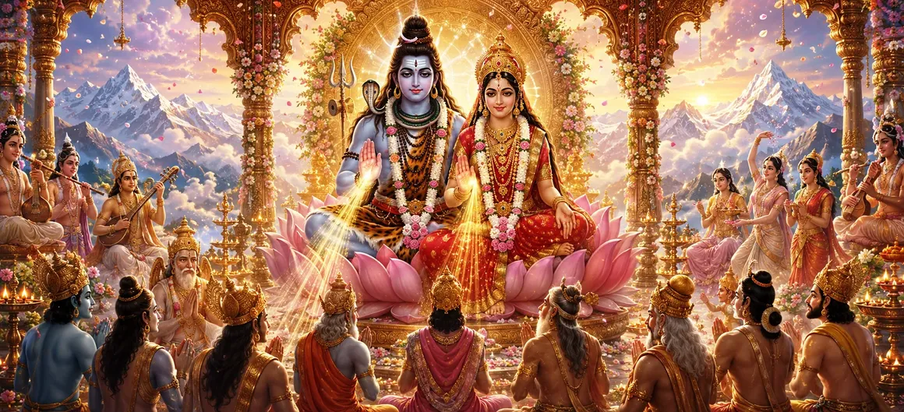

Following the sacred marriage of Lord Shiva and Goddess Pārvatī, the magnificent palace of Himālaya became the centre of extraordinary divine festivities. Gods, sages, gandharvas, celestial attendants, and countless heavenly beings celebrated the eternal union of Shiva and Śakti. Sacred music filled every direction, celestial flowers descended from the heavens, and the divine couple received heartfelt blessings for the welfare of the entire universe.
The completion of the divine marriage filled the three worlds with immeasurable happiness. The gods felt that their long-awaited purpose had been fulfilled, while sages and celestial beings rejoiced upon witnessing the sacred union of the Supreme Lord and the Mother of the universe.
Gandharvas played enchanting melodies upon their divine instruments, while celestial drums resounded throughout the heavens. The great sages recited auspicious Vedic hymns, and the assembled brāhmaṇas chanted sacred mantras in praise of Lord Shiva and Goddess Pārvatī.
The beautiful Apsarās performed graceful dances before the divine couple. Siddhas, Cāraṇas, Kinnaras, and other heavenly beings sang songs celebrating the glory of Shiva, the devotion of Pārvatī, and the sacred purpose behind their eternal union.
The sky became radiant with divine light as fragrant flowers descended from the celestial regions. Mandāra blossoms, heavenly lotuses, and countless auspicious flowers gently covered the wedding pavilion, filling the surroundings with an enchanting fragrance.
Brahmā, Viṣṇu, the celestial sages, and the guardians of the directions approached Lord Shiva and Goddess Pārvatī with reverence. They offered auspicious blessings and prayed that the sacred union of Shiva and Śakti would restore balance, destroy evil, and bring peace and prosperity to all creation.
The marriage of Shiva and Pārvatī brings joy and harmony to the whole creation.
Divine blessings inspire peace, prosperity, devotion, and spiritual fulfilment.
Their eternal union represents the perfect balance of consciousness and divine energy.
The festivities following the sacred marriage were more than an expression of celestial happiness. They represented the restoration of cosmic harmony through the reunion of Shiva and Śakti. Lord Shiva embodied pure consciousness, while Goddess Pārvatī embodied the divine energy through which creation is sustained.
The divine marriage teaches us that lasting harmony arises when consciousness and energy work together. When wisdom guides our actions and devotion purifies our intentions, every part of life can become a sacred celebration.
King Himālaya and Queen Menā approached Lord Shiva and Goddess Pārvatī with deep humility and affection. They offered precious garments, beautiful ornaments, fragrant garlands, and many auspicious gifts to the newly married divine couple.
Their offerings were not displays of royal wealth but expressions of devotion, gratitude, and parental love. Himālaya considered himself greatly blessed because the Supreme Lord had accepted his beloved daughter as His eternal consort.
The assembled gods prayed that the union of Shiva and Pārvatī would protect righteousness and remove the suffering of all beings. They understood that this sacred marriage would eventually lead to the birth of the divine son destined to defeat Tārakāsura and restore peace throughout the worlds.
Thus, every song, blessing, dance, and shower of celestial flowers carried a deeper hope for the future. The happiness of the wedding celebration became inseparable from the divine promise of protection and universal welfare.
"When Shiva and Śakti unite, the universe rejoices, harmony is restored, and divine blessings flow toward every living being."
The divine marriage of Lord Shiva and Goddess Pārvatī filled the three worlds with sacred music, celestial flowers, heartfelt blessings, and immeasurable joy. With the festivities completed and cosmic harmony restored, proceed to the next chapter to discover the revival of Kāma through the compassion and divine grace of Lord Shiva.